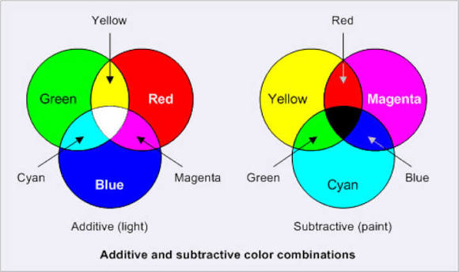

Een kleurmodel is een manier om kleuren met verschillende kleuren en hoeveelheden te maken. Computers gebruiken kleurmodellen om kleuren op een scherm of op papier te laten zien.
Twee bekende kleurmodellen zijn RGB en CMYK. RGB wordt vooral gebruikt voor schermen en CMYK wordt vooral gebruikt bij het afdrukken.

RGB staat voor rood, groen en blauw. Met deze drie kleuren kunnen heel veel verschillende kleuren worden gemaakt. RGB wordt gebruikt bij apparaten zoals computers, telefoons en televisies.
Iedere kleur heeft een waarde van 0 tot en met 255. Door de waarden van rood, groen en blauw te veranderen, krijg je een andere kleur.
Bij RGB wordt elke kleur gemaakt door rood, groen en blauw met elkaar te mengen. Als alle drie de kleuren 0 zijn, krijg je zwart. Als alle drie de kleuren 255 zijn, krijg je wit.
Door bijvoorbeeld meer rood of meer blauw toe te voegen, verandert de kleur die je op het scherm ziet.
CMYK is een kleurmodel dat vooral wordt gebruikt voor printers. De letters staan voor cyaan, magenta, geel en zwart.
Met deze vier kleuren kunnen printers verschillende kleuren op papier maken. CMYK werkt anders dan RGB, omdat RGB licht gebruikt en CMYK met inkt werkt.
Bij CMYK worden verschillende hoeveelheden inkt met elkaar gecombineerd. Door de kleuren cyaan, magenta en geel te mengen kunnen veel andere kleuren ontstaan.
De letter K staat voor zwart. Zwart wordt apart gebruikt omdat hiermee donkere kleuren en duidelijke teksten kunnen worden gemaakt.
Een afbeelding op een scherm bestaat uit heel veel kleine puntjes. Deze puntjes noemen we pixels.
Iedere pixel heeft een bepaalde kleur. Al deze pixels samen vormen de afbeelding die je op je scherm ziet. Als je ver inzoomt op een afbeelding, kun je de losse pixels soms zien.
De resolutie vertelt uit hoeveel pixels een afbeelding of scherm bestaat. Een hogere resolutie betekent meestal dat er meer pixels zijn.
Een afbeelding van bijvoorbeeld 1920 bij 1080 pixels heeft 1920 pixels in de breedte en 1080 pixels in de hoogte. Daardoor kan de afbeelding veel details bevatten.
Wil je meer weten over kleurmodellen? Dan kun je op de onderstaande websites verder lezen.